Decathlon › Millennium Estoril Open
- Agency
- WOLT — Energy for Brands
- Creative Director
- Francisco Freitas
- Project Manager
- Inês Costa
- Design
- Diogo Nóbrega
- Copy
- Joana Rebelo
- Client
- Decathlon Portugal
PT
Campanha completa para a All Court Pro da Kuikma — a bola oficial do Millennium Estoril Open. Uma plataforma de marca, «Feita para deixar marca», levada ao 3D de retalho, ao e-commerce, à PLV em loja, ao merchandising e ao outdoor.
EN
A full campaign for Kuikma's All Court Pro — the official ball of the Millennium Estoril Open. One brand platform, "Feita para deixar marca", carried across 3D retail builds, e-commerce, in-store POS, merchandising and outdoor.
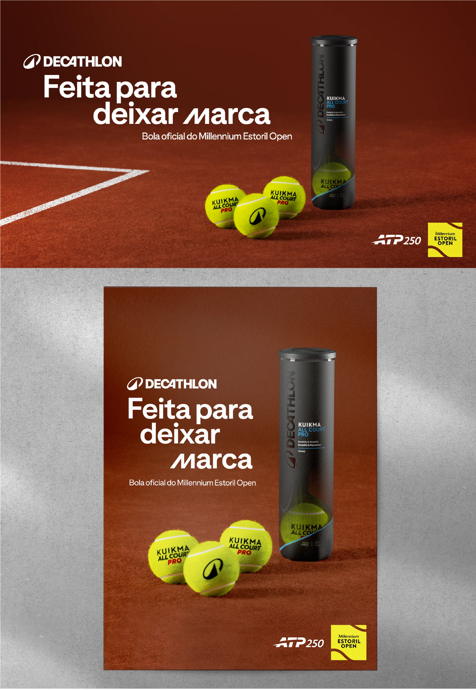
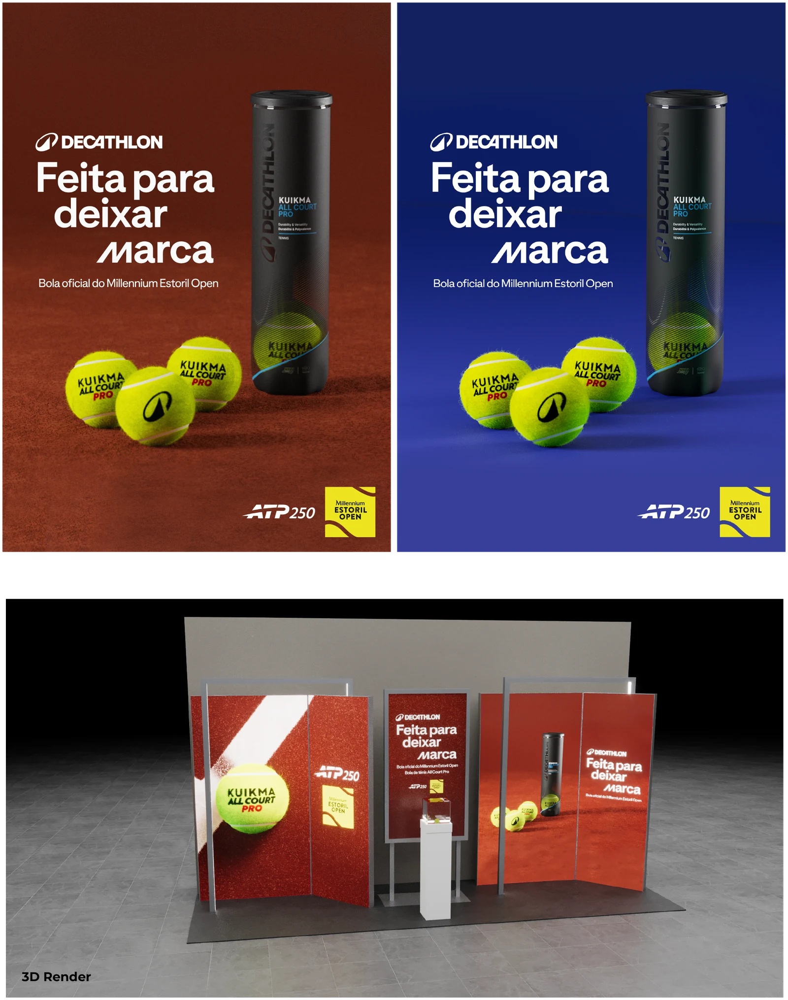
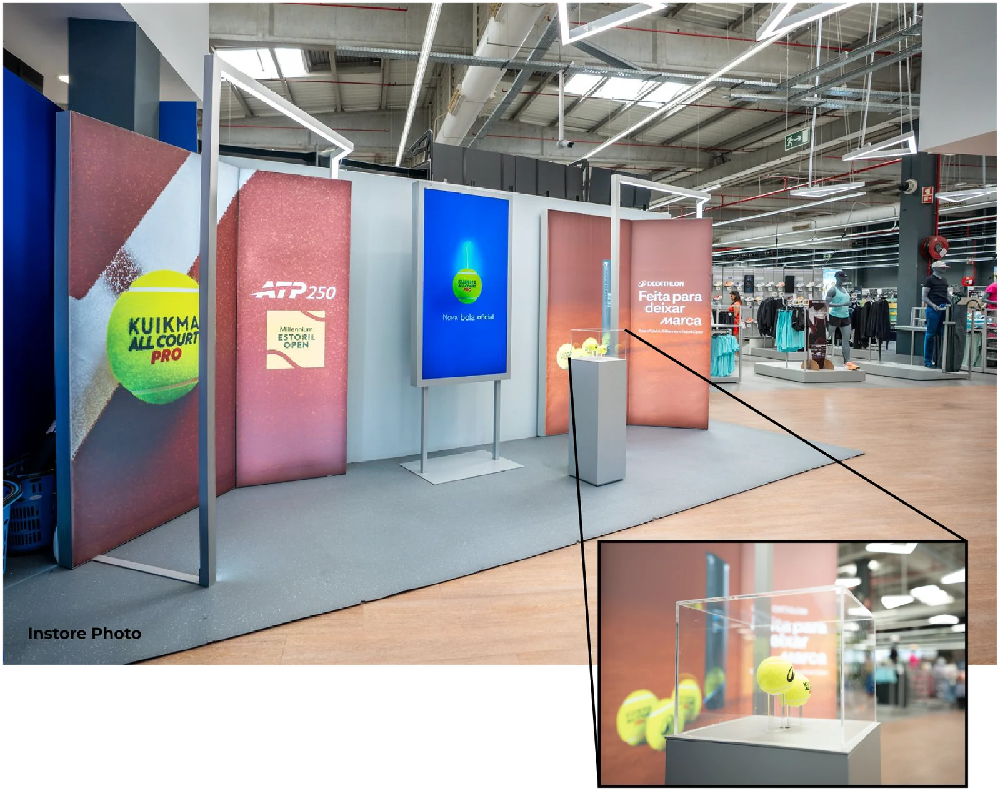
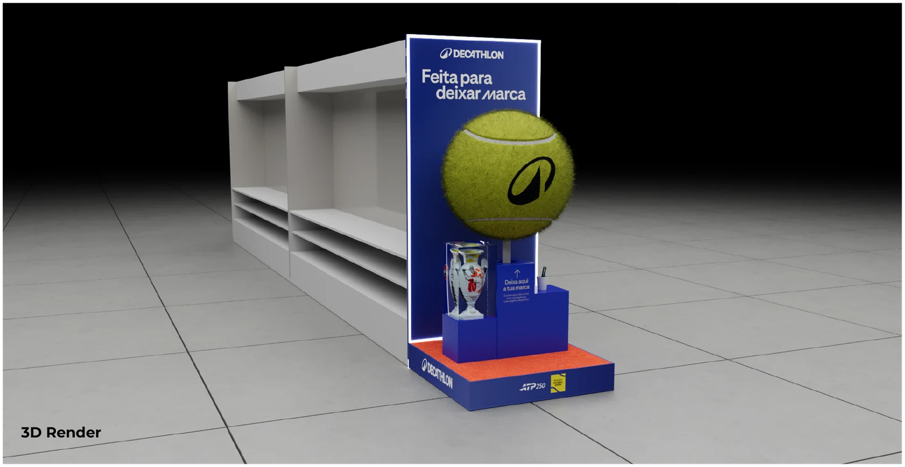
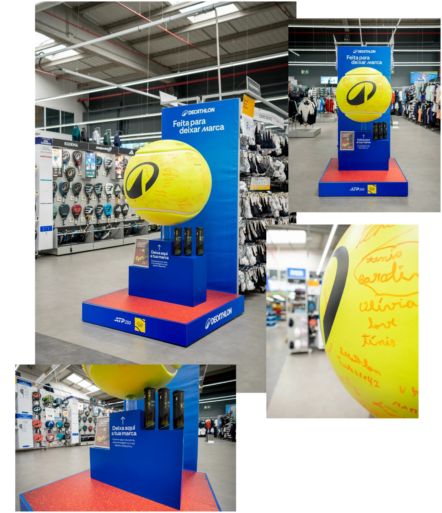
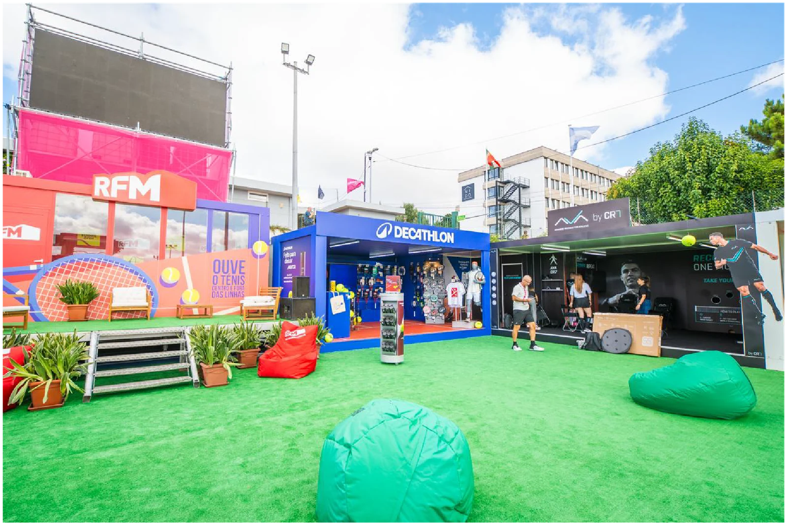


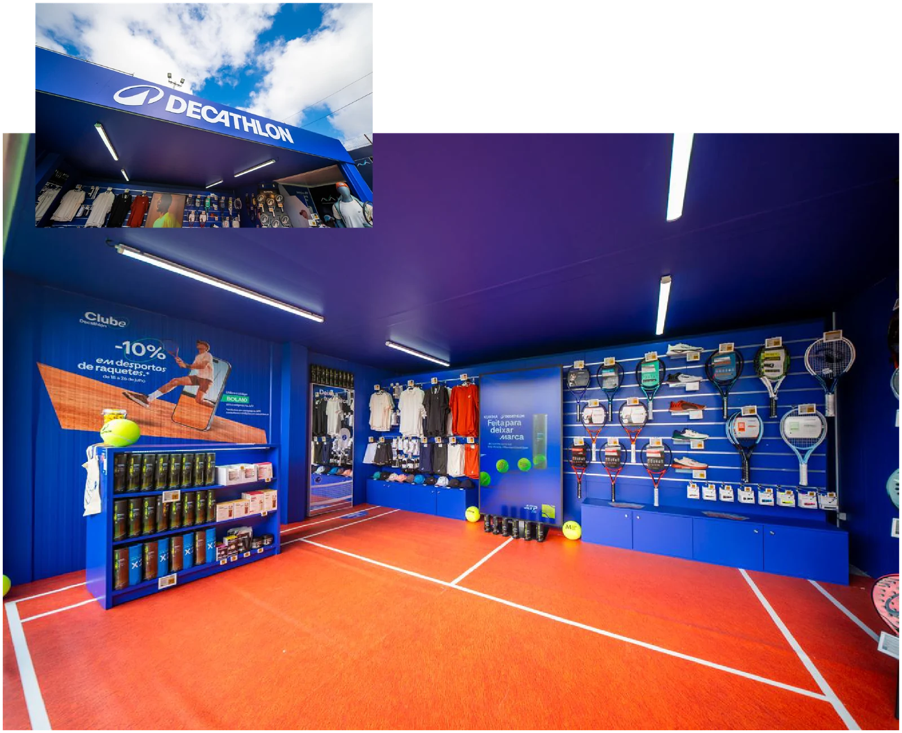
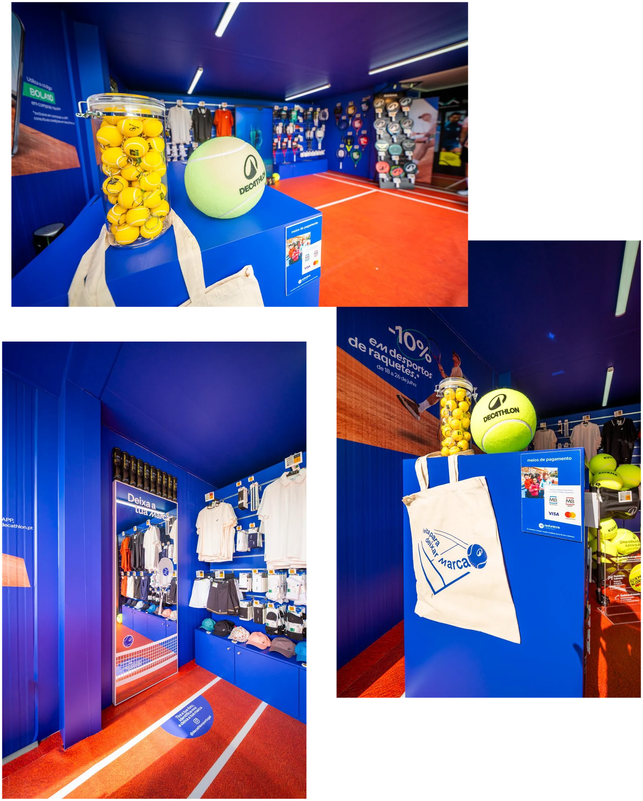
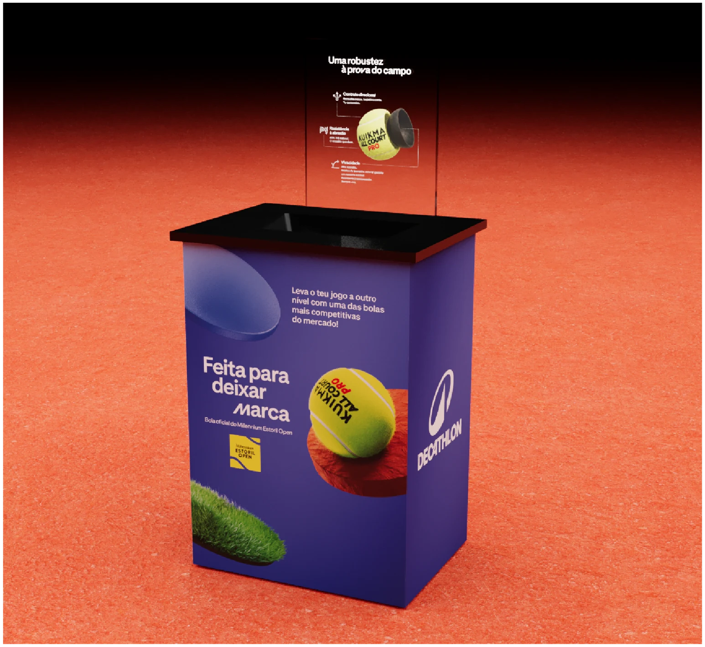
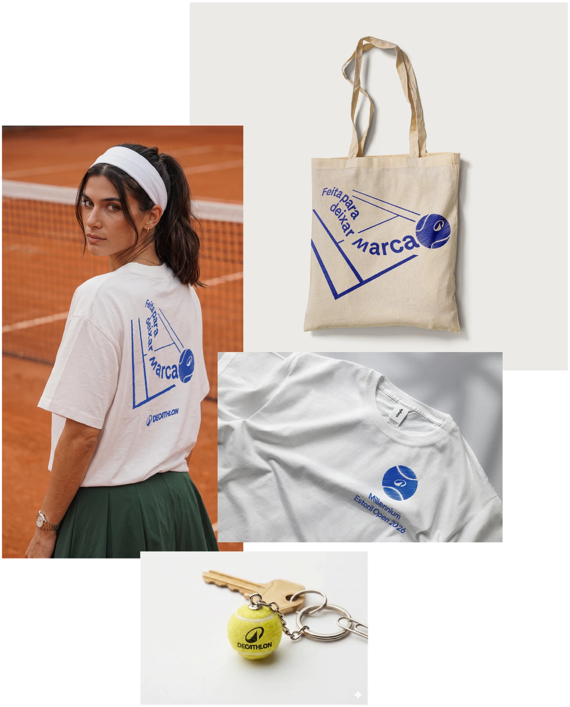
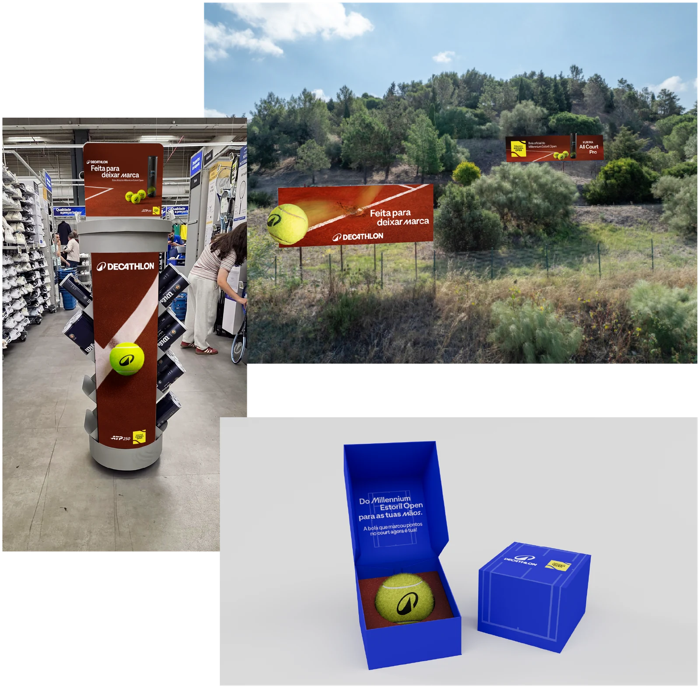
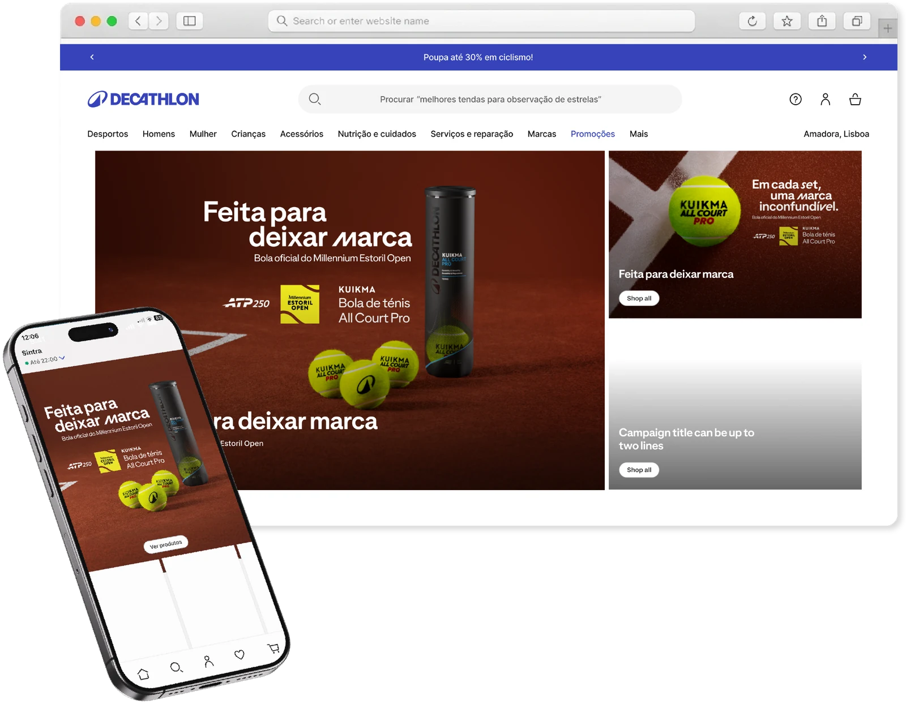